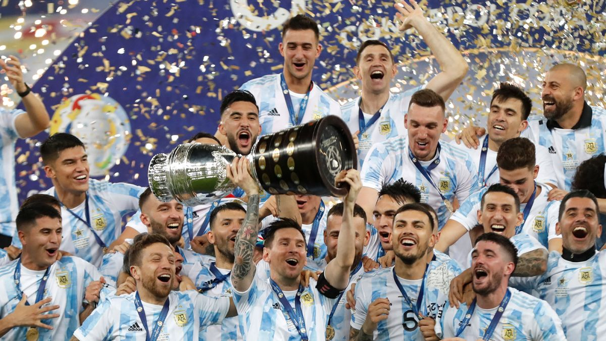

Copa America 2021 final: Argentina Vs Brazil
Story by Reuters


Neymar came into prominence at Santos, where he made his professional debut aged 17.

Messi came into prominence at Santos, where he made his professional debut aged 17.

Ronaldo came into prominence at Santos, where he made his professional debut aged 17.

Paulo came into prominence at Santos, where he made his professional debut aged 17.

Ozil came into prominence at Santos, where he made his professional debut aged 17.

Mauro came into prominence at Santos, where he made his professional debut aged 17.

Di María made his senior international debut for Argentina in 2008 at age 20.

Kylian Mbappé Lottin is a French professional footballer who plays as a forward for Ligue 1 club .

Salah started his senior career with Egyptian club Al Mokawloon, departing shortly thereafter to join Swiss side Basel.

Harry Kane came into prominence at Santos, where he made his professional debut aged 17.

Philippe Coutinho came into prominence at Santos, where he made his professional debut aged 17.

Kevin De Bruyne came into prominence at Santos, where he made his professional debut aged 17.
Argentina win the Copa America title for the first time since 1993 as they beat Brazil 1-0 in the final at the historic Maracana Stadium in Rio de Janeiro.This is Lionel Messi's first major trophy with the Argentina senior team.
Story by Reuters
By Markovrakela
By Alex Jones
.jpg)
By VAnessa Romo